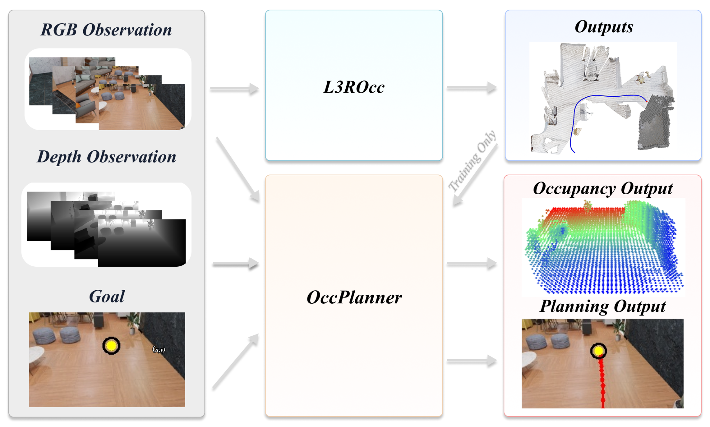
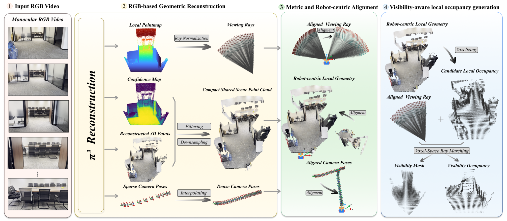
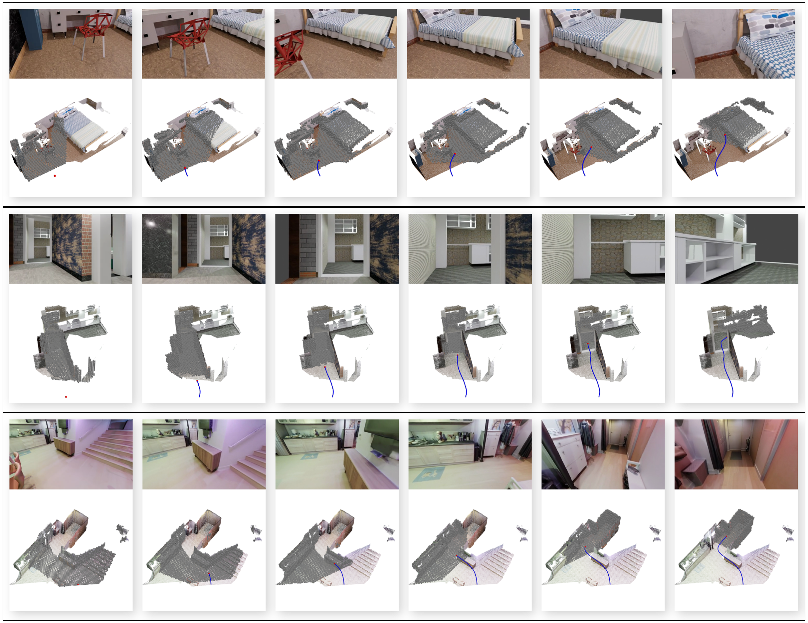
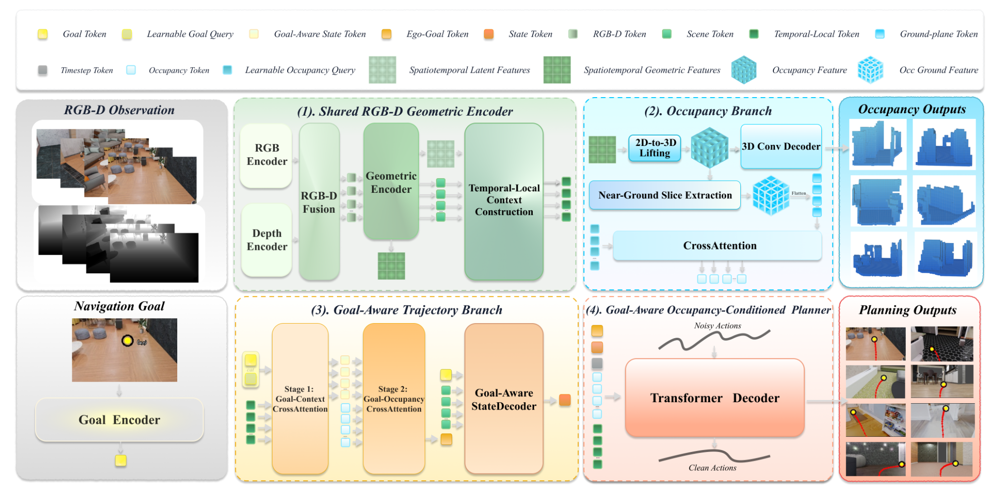
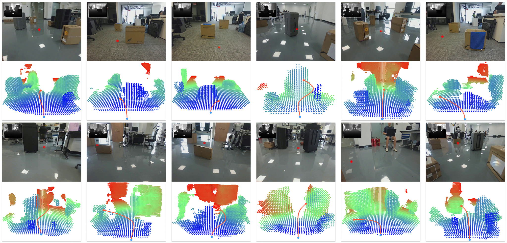

Data engineL3ROcc
Monocular navigation video → metric, robot-centric geometry → visibility-aware local occupancy.
Embodied navigation · 3D occupancy · Diffusion planning
A goal-aware planner that grounds an image-space target in local 3D scene structure and generates continuous, obstacle-aware trajectories.

01 / Overview
A single image-space point provides neither metric depth nor traversability. OccPlanner makes the missing geometry explicit: it predicts visibility-aware local occupancy, aligns the goal with that spatial structure, and conditions a diffusion policy on both.
02 / Video
Two complementary views of the system: offline supervision generated by L3ROcc and closed-loop predictions produced by OccPlanner.
Monocular navigation video → metric, robot-centric geometry → visibility-aware local occupancy.
RGB-D history + pixel goal → local occupancy prediction + continuous obstacle-aware trajectory.
03 / Training supervision
L3ROcc
L3ROcc converts existing monocular navigation videos into temporally consistent, robot-centric occupancy, visibility, and trajectory annotations.

Recover shared 3D geometry, viewing rays, confidence, and camera motion from monocular RGB sequences.
Estimate metric scale when reference poses are available and express geometry in a consistent robot-centric frame.
Combine voxelization with ray marching so that only ray-observed empty cells are labeled free; unseen cells remain unknown.

04 / Learned planner
OccPlanner
OccPlanner jointly learns local occupancy and future trajectories from an RGB-D observation history and a visible pixel goal.

05 / Results
We prioritize closed-loop navigation in unseen environments, then examine qualitative transfer to a real Unitree G1 without task-specific fine-tuning.
Cluttered-Easy · SR
Cluttered-Hard · SR
Predicted trajectories bend around local obstacles while preserving progress toward the image-space goal across synthetic clutter and photo-realistic indoor environments.

Qualitative experiments on a Unitree G1 show that the planner responds to boxes, furniture, and people by steering predicted trajectories through locally free space.

06 / Paper
2026 manuscript
We introduce L3ROcc for visibility-aware local occupancy supervision and OccPlanner for occupancy-conditioned pixel-goal trajectory generation.
Open PDF Citation details will be added with the public paper release.